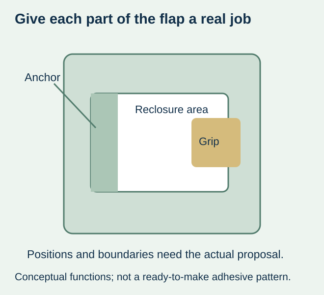
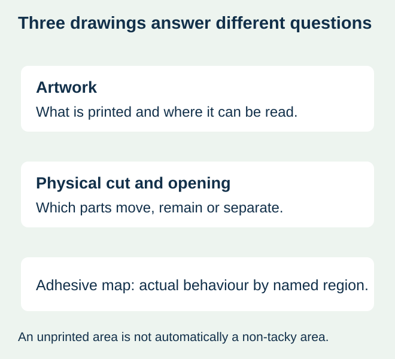

A reclosure sample does not stay shut after use. Asking for more tack before observing the opening sequence can conceal a different failure: a hard-to-find tab, torn hinge, contaminated landing area or flap that no longer aligns.
Record the failed step and its sequence, not only whether the last closure held. The next design comparison should address that observed function rather than an assumed weak adhesive.


Specify adhesive behaviour as its own drawing
A region without printed ink is not automatically a non-adhesive region. If the user must lift a non-tacky grip while another part holds or recloses the pack, identify those physical functions independently of the printed artwork. Ask the converter how its actual proposed construction supplies them; do not assume a coating name or dashed line defines the adhesive below.
HERMA’s food-closure example with a gripping flap describes an identified construction in which adhesive is partly deactivated to create the grip. That illustrates one manufacturer’s route. It does not establish a general recipe, a repeated-use result or food-contact approval for another label, and it does not confirm that the same construction or process is available here.
| Functional region | Actual requirement to specify | Do not infer from |
|---|---|---|
| Grip | The intended user can find and lift the proposed region under the real use conditions | An empty white patch or printed “open” instruction |
| Anchoring/hinge area | The actual part intended to stay attached and guide the movement | An unchanged outline in the PDF |
| Reclosure region | The proposed surface/adhesive interaction through the agreed use sequence | The word removable or an initial clean-pack closure |
| Contact-sensitive area | Actual location relative to opening, contents and package layers | A generic food-safe statement for another component |


Keep the views and their functions distinct
Provide a readable face view, the physical cut/opening layout and an adhesive-function map using the converter’s confirmed orientation convention. If a separate backside view is used, label it explicitly and identify how it relates to the face. Do not automatically mirror a manufacturing file merely to make a review sketch look like the physical reverse.
The carrier-view guide explains the orientation issue for a different handling task. A release-liner slit used before application is not a consumer grip on the applied reclosure. If both are requested, identify each layer and task separately rather than give them one ambiguous tab label.
Mark the intended dimensions and relationships as a proposal for review. Have the converter identify the actual process and relevant variation it can support. This guide supplies no universal non-adhesive margin, hinge width or registration tolerance. A non-tacky region in one physical sample does not establish that every revised file or supplied roll has the same boundary.
Choose a supported functional proposal instead of demanding more tack everywhere
If the grip is difficult to lift, a stronger whole-area adhesive is not a direct answer to that function. If the hinge tears before reclosure, review the structural and use sequence. If the flap returns to a contaminated or folded landing area, retain that observation before changing the adhesive family. Use the step record below to identify the first relevant event.
For a hypothetical dry-food pouch, a proposed non-tacky grip may improve access while the rest of the flap still needs its own opening and reclosure evidence. A mockup can communicate the zones without establishing repeated-use performance. Compare the actual complete construction and package, keeping any substitute material or omitted operation explicit.
If the required zones cannot be supported in the offered construction, request a disclosed alternative label or package closure rather than approve a visually similar uniform-adhesive piece. Compare the actual geometry, assembly work, sample scope and terms. No patterned-adhesive service, special minimum, free sample or universal barrier result is promised.
Release the identified zone map with the construction and actual use-sequence observations. A change in grip location or opening size can affect more than the visible instruction. Review the affected evidence and contact arrangement before the next order; an updated graphic alone does not close those physical questions.
Observe one complete use sequence
Agree the intended use scenario with the package owner: how the flap is found and lifted, how food is accessed, how the flap is returned and what closed means for the required function. Use the actual intended package and product conditions where available, while recording any prototype substitutions.
Keep the same sample identity across its observations. A sequence assembled from several different clean packs cannot show how one flap changes during use. If inspection interrupts or alters handling, identify that intervention rather than treating it as normal use.
| Use step | Observation to keep | Question before redesign |
|---|---|---|
| Find and lift | Tab visible, reachable and usable in the intended handling | Instruction, tab shape or tack issue? |
| Open | Hinge and pack remain in the intended condition | Structural failure before reclosure? |
| Access contents | Product route relative to landing surface | Was the landing area changed by use? |
| Return flap | Flap reaches the intended landing position | Alignment or folding prevents contact? |
| Reclose | Actual observed closure against the required function | What function failed and when? |
| Repeat | Sample ID, agreed cycle and first observed change | Persistent pattern or incomplete observation? |
The sheet has no universal target cycle count. Define relevant use and acceptance with the responsible package team; a demonstration of opening is not a barrier-performance test.
Classify the first failure, then retain later observations
If a hinge tears before the flap can be returned, record that first. Increasing tack does not directly answer a hinge failure. If the flap returns to a folded or shifted position, inspect the geometry and use sequence before interpreting the reduced contacted area as a material failure.
When the landing surface is visibly affected by product, describe the observation without inventing a contamination threshold. Ask whether the proposed construction and package opening have been evaluated under those conditions. A clean unused sample is a different comparison object.
Compare changes against the original required function
Agree one targeted design or construction change where practical. Record whether it improves the failed step while making another step harder. A flap that closes firmly but cannot be reopened as intended has not automatically passed the complete use requirement.
Keep first-opening protection, repeated convenience closure and food-contact assessment as separate review questions. Reclosure appearance does not establish restoration of the original hermetic seal or suitability for every food-contact arrangement.
Use opening-path evidence for the distinct tamper-evidence decision, pouch layout for ordinary placement and ink/construction documentation for technical scope.
Short answer
Peel-and-reseal labels can add convenient reclosure to pouches and trays, but they must be engineered with the package opening. The label face, peel tab, hinge, release area, resealable adhesive and landing surface need to work as one system.
If the goal is simply to fit more instructions on a small pack, compare a peel-and-reveal extended-content label instead. Reclosing a food opening is a separate performance requirement; ask the supplier to show repeated-use results on your actual filled pouch.
A standard permanent label can be die cut into a flap shape and look convincing in a presentation. It may even open once. That does not make it a reliable reclosure. Food dust, oil, moisture, cold temperature and repeated bending quickly reveal whether the construction was tested or merely illustrated.
The parts of a label-based reclosure
| Feature | Job | Common failure |
|---|---|---|
| Open tab | Gives fingers a non-sticky lift point | Too small, hard to find or covered in adhesive |
| Hinge | Keeps the flap attached and aligned | Tears or folds into the opening |
| Reseal adhesive | Closes repeatedly against the landing area | Loses tack after crumbs, oil or condensation |
| Cut pattern | Defines the opening without damaging the pack | Weak tear path or incomplete access |
| Barrier design | Protects freshness before and after opening | Opening is larger than the reclosure can protect |
A composite snack-pouch brief
This is a composite planning example. A granola brand wants to replace its zipper with a peel-and-reseal label to reduce package complexity. The package sample is clean and flat, and the first prototype closes beautifully. Suppose repeated handling brings oat dust to the landing area and a corner no longer closes as intended. This is a hypothetical observation, not a measured result or proposed five-cycle threshold.
The label supplier could respond with a more aggressive adhesive. That may make reopening unpleasant or tear the film. The better review asks whether the opening is too close to the product path, whether the landing area is wide enough and whether a zipper is actually the better format for loose, dusty pieces.
Label-based reclosure is one option to compare against the actual required opening and closing function, not a reason to defend a failing prototype.
Where peel-and-reseal labels work well
- Cheese, deli and produce packs with a controlled opening and broad clean landing area.
- Wet wipes or household products where the flap protects a die-cut opening.
- Dry foods with moderate access frequency and a package engineered for the label.
- Promotional or premium packs where a large functional label also carries instructions.
A zipper often wins when consumers open the pack many times, the product contaminates the seal, the contents are heavy or the opening needs full-width access. A rigid snap lid may win on tubs. Functional labels are useful precisely because they are one option among several, not because every package needs one.
Adhesive zones and deadened areas
The entire back of the label may not use the same adhesive behavior. The lift tab needs a finger-friendly non-tack area. The hinge may need permanent anchorage. The reseal zone needs controlled, repeatable peel. Some designs use patterned adhesive or a dedicated construction so these functions coexist.
That complexity affects dielines and artwork. “Peel here” should sit exactly on the open tab, arrows should follow the intended motion and mandatory copy should remain readable when the flap is open or closed. The graphic designer needs the functional die drawing before placing important text.
Test what consumers actually do
| Test | What it reveals | Suggested observation |
|---|---|---|
| Repeated open/close cycles | Loss of tack, film fatigue and tab usability | Record the target number and failure point |
| Filled-pack storage | Stress, bulging and product contact | Test upright, side and handled conditions |
| Cold or humid exposure | Condensation and adhesive change | Cycle between storage and room temperature |
| Contamination challenge | Crumb, oil or moisture sensitivity | Use the actual product, not a clean mockup |
| Consumer handling | Whether instructions are obvious | Observe people who did not design the pack |
Barrier and compliance questions
Reclosure does not automatically restore the original hermetic seal. Define what the package must protect after first opening: spill control, moisture retention, aroma, oxygen exposure or simple convenience. Also state whether the label, adhesive or cut edge can contact food. Compliance documentation must match the actual contact condition and market.
Avery Dennison's reclosure portfolio overview shows how functional labels are designed around repeated opening and package use. It is a useful reference, but the proposed material still needs testing on your film and product.
What to send for a reseal-label review
- Empty and filled package samples using production film.
- Exact opening location, size and cut method.
- Expected number of opening cycles and storage conditions.
- Product contamination risks such as oil, powder or condensation.
- Required barrier function after opening.
- Food-contact condition and destination market.
- Application method, line speed and roll direction.
For ordinary pouch label placement, read Stand-Up Pouch Labels. For moisture-resistant constructions, compare Paper vs Film Labels.
Send the relevant project details
Discuss the reclosure use sequence with the package/opening layout, intended use, sample-linked step observations and the first failed function. The form opens an email draft; use listed email or WhatsApp for files. Available constructions, trial scope, barrier needs and food-contact review must be confirmed.
Review the relevant label product scope and prepare the specification inquiry. The form opens an email draft; send files through the listed email or WhatsApp route. Actual construction, samples, quantities and timing require confirmation.